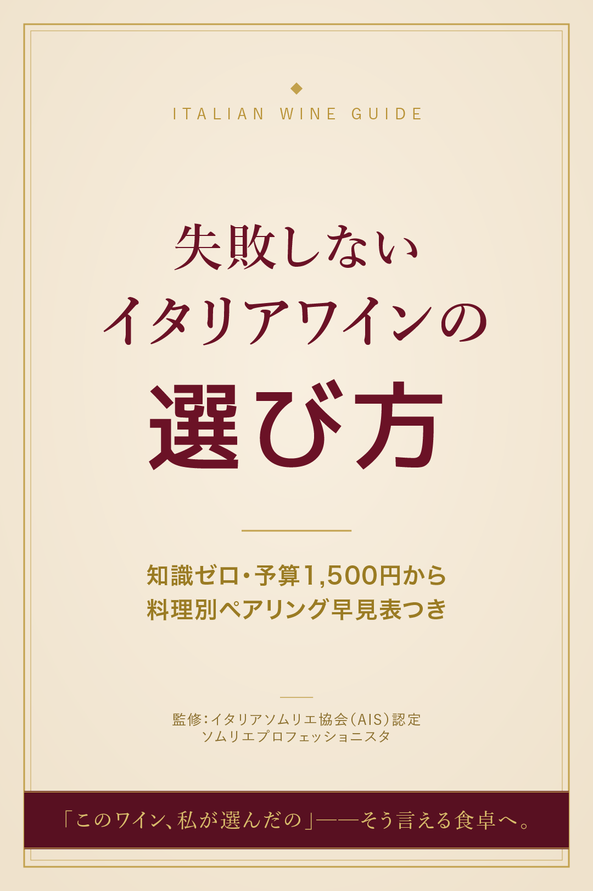
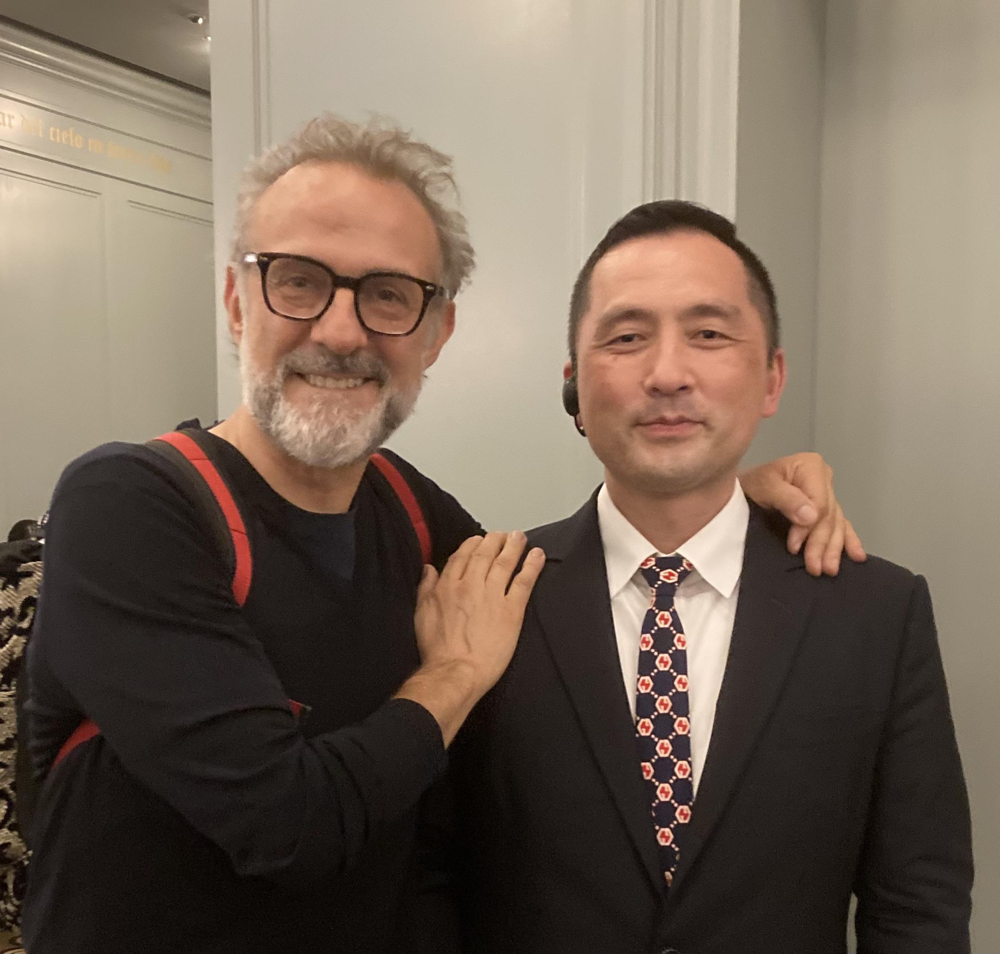

こんなお悩みありませんか？
- 売場でラベルを見ても、どれが美味しいのかまったくわからない
- 毎回同じワインばかり。冒険したいけど、失敗（外れ）が怖い
- 夫に「このワイン大丈夫？」と言われると、自信をなくしてしまう
- 宴や会食で、ワインの知識がなくて恥ずかしい思いをしたことがある
- ワイン＝フランスのイメージで、イタリアワインは何から学べばいいかわからない
- 情報が多すぎて、結局どこから手をつければいいのか迷子になっている
知識ゼロ・予算1,500円からでも、失敗しないイタリアワインの選び方



知識ゼロ・予算1,500円からでも、スーパーやECで「当たり」を引けるようになる

はじめまして！ここまで読んでくださって、ありがとうございます。
私はイタリアで6年間ワインを学び、イタリアソムリエ協会（AIS）認定の資格を取得しました。帰国後は東京のイタリア料理店で経験を積み、今でもイタリア好きが講じて、「イタリア人が好むイタリアのワイン」を学び続けています。
特別な人だけのものに見えるイタリアワインを、「普段の食卓で、自信を持って選べるもの」に変えたい。かつての私自身が「イタリアワイン、難しそう」と一歩を踏み出せなかったからこそ、あなたと同じ目線で、わかりやすくお届けしていきます。
実は、ワインが怖かったんです。
ワインの仕事をしている、と言うと驚かれるのですが、
私も昔は、レストランでワインリストを渡されるたびにドキッとしていました。
横文字の名前ばかりで、何が違うのかわからない。
「とりあえずグラスの赤で」と言って、ホッとする。
ワインといえばフランスのイメージしかなくて、
イタリアワインなんて正直まったくの未知の世界でした。
「本場で、ちゃんと学びたい」と決意した
そんな私が、イタリア料理とワインの世界に惹かれていって、ある日こう思ったんです。
「中途半端な知識じゃなくて、本場でちゃんと学びたい」。気づけば私はイタリアにいました。
教科書の暗記ではなく、土地と、人と、食卓からワインを学ぶ
そう決めて、6年間を過ごすことになります。
でも、最初は「情報の多さ」に押しつぶされそうでした
ところが、現実は甘くありませんでした。
実はイタリアは、世界でいちばん土着品種が多い国。
公式に認められているものだけで350種類以上。
州が変われば、ブドウも、味も、合わせる料理もまるで違う。
「これ、一生かかっても理解できないんじゃないか…」そう何度も心が折れかけました。
トスカーナでの「ある出会い」が、すべてを変えた
たまたま見つかった初めての仕事先に
1982年のイタリア最優秀ソムリエがいたんです。
一緒に仕事をしているうちに、ワイナリーに行ったり、
テイスティング会を企画してくれたり。
「この地方では、この料理を食べるから、このワインが生まれた」
そう教わった瞬間、バラバラだった点が、一本の線になりました。
自信を持って選べるようになった
そこからは、面白いように世界が開けていきました。
エノテカ（ワイン店）に入っても、迷わず一本を選べる。
料理を見れば、合わせるワインが自然と浮かぶ。
「これにしよう」と、自信を持って言える。
AISの資格も取り、帰国後は東京のイタリア料理店で、
たくさんのお客様にワインをご案内してきました。
そして気づいた──「あなたの悩み」を解決したい
ワイン選びに必要なのは、難しい専門用語でも、高いお金を払うことでもありません。
「州（産地）→ 土着品種 → 料理との合わせ方」
この順番で、ほんの少しコツを知るだけ。
知識ゼロでも、予算1,500円からでも、
あなたの食卓は「おしゃれな大人時間」に変わります。
私自身、昔はワインが「怖くて」、リストを渡されるたびに自信をなくしていました。
そんな私が、イタリアで土地と料理からワインを学び、
「自分で選べる」喜びを知ったとき、世界がガラッと変わりました。
お店でお客様の「私、ワインわからなくて…」という申し訳なさそうな声を聞くたびに、
「その壁、私が壊したい」と思ってきました。だからまずは無料で、あなたにも実感してほしいんです。
イタリアで6年間、土地と食卓からワインを学んできたこと。
イタリアソムリエ協会（AIS）認定の知識に裏打ちされていること。
帰国後も東京のイタリア料理店で、たくさんのお客様にご案内してきた現場の経験があること。
今もイタリア現地で飲まれているリアルなワインを学び続けていること。
ネットや本の受け売りではなく、現地で、いま、私が見て・飲んで・感じている情報を、
あなたの食卓のためにわかりやすく翻訳してお届けします。
お渡しするBOOKは容量が大きく、インスタのDMでは送れないんです。
DMでやり取りする方とは区別して、お一人おひとりに寄り添ったサポートをするためにも、
安心・安全に管理できる公式LINEを使用しています。
だからこそ、です！私自身、お店で働きながら膨大な情報の中から「本当に使えるコツ」だけを絞り込んできました。
忙しいあなたが、最短で「選べる人」になれるようにまとめています。時間がないからこそ、私を頼ってください。
まったく問題ありません！むしろ「辛口・甘口くらいしか知らない」という方のために作りました。
専門用語は最小限。スーパーで今日から使える形でお伝えします。
届きません！公式LINEにて、PDFでお送りします。
住所などの個人情報はいただかないので、ご自宅に何かが届くことはありません。
安心して受け取ってください。
悪用は一切ありません、と断言させてください。
私が使っている公式LINEはセキュリティが厳しく管理されていて、
見えるのはアイコンとLINE名のみ。
あなたは「一緒にワインを楽しみたい」と思ってくださった大切な仲間です。ご安心ください。
いいえ、受け取ってからがスタートです！BOOKをもとに、
まずは一本「自分で選んでみる」ところまで伴走します。
「読んで終わり」の雑なサポートはしません。
あなたの食卓が変わっていく瞬間まで、一緒に楽しんでいきましょう。
あなたの毎日を、もっと豊かにするワインの選び方。
売場で30分迷って、結局「なんとなく」で買ってしまう。
開けてみて「うーん…」と、また自信をなくす。
本当はもっと、食事の時間を特別なものにしたいのに。
「このワイン、私が選んだの」と、胸を張って言いたいのに。
──そうやって、ずっと諦めてきませんでしたか？
でも、大丈夫です。ワイン選びに、難しい知識も、高いお金もいりません。
「州 → 品種 → 料理」の順で、ほんの少しコツを知るだけ。
知識ゼロでも、予算1,500円からでも、
あなたの平日の夜は「おしゃれな大人時間」に変わります。
さあ、今度こそ一緒に、「自分で選べた」という喜びを、手に入れましょう。